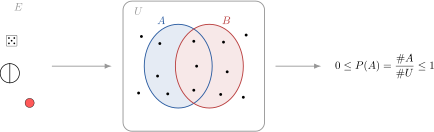
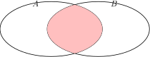
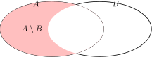
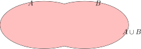

Hoofdstuk 1Grondbegrippen van de kansrekening

Leerplandoelstellingen (GO! Navigator)
Basisvorming (BV3_06)
-
• BV3_06.13 (MD 06.13) De leerlingen bepalen kansen met behulp van kruistabellen, boomdiagrammen en de wet van Laplace.
-
– afbakening: verband tussen relatieve frequentie en kans
-
Gevorderde wiskunde (WD3_06.08)
-
• WD3_06.08.33 (MD 06.08.34) De leerlingen lossen telproblemen op met en zonder herhaling en waarbij de volgorde al dan niet van belang is.
-
– afbakening: binomium van Newton
-
– afbakening: driehoek van Pascal
-
– afbakening: duiventilprincipe van Dirichlet
-
Extra uitleg: kansexperiment, uitkomst, uitkomstenverzameling, gebeurtenis, elementaire gebeurtenis, onmogelijke gebeurtenis, zekere gebeurtenis, tegengestelde gebeurtenissen, doorsnede van twee gebeurtenissen, verschil van twee gebeurtenissen, vereniging of unie van twee gebeurtenissen, twee elkaar uitsluitende gebeurtenissen, axioma’s van de kansrekening, complementregel, somregel, verschilregel, stelling van Boole
I Kansexperiment
1 Definitie
Een kansexperiment of kort een experiment is een verschijnsel
• waarvan het verloop van het toeval afhangt
• dat steeds onder gelijk blijvende omstandigheden kan herhaald worden
2 Voorbeelden
-
• Een muntstuk opwerpen
-
• Een dobbelsteen gooien
3 Tegenvoorbeelden
-
• Water opwarmen is geen wiskundig experiment, want het is niet van het toeval afhankelijk, maar wel van fysische wetten.
-
• Een vervalste dobbelsteen gooien, bijvoorbeeld één die altijd ’6’ werpt, is niet van het toeval afhankelijk en wordt bijgevolg niet als een experiment beschouwd in de kansrekening.
4 It’s complicated
-
• De uitslag van een voetbalwedstrijd voorspellen
II Uitkomst
Het begrip ’uitkomst’ is een grondbegrip van de kansrekening en kan niet nauwkeurig gedefinieerd worden. We stellen wel als voorwaarde:
Elk experiment geeft aanleiding tot precies 1 uitkomst.
1 Voorbeeld
Een mogelijke uitkomst bij het opwerpen van een dobbelsteen is ’4’.
III Uitkomstenverzameling
1 Definitie
De uitkomstenverzameling van een experiment is de verzameling van alle mogelijke uitkomsten van dit experiment.
2 Notatie
\[ U=\{u_1, u_2, u_3, \dots \} = \text {universum} \]
Naast \(U\) wordt voor de uitkomstenverzameling in kansrekening ook vaak de Griekse letter \(\Omega \) (omega) gebruikt.
3 Voorbeelden
-
• Eindige uitkomstenverzamelingen
-
– Opwerpen van één dobbelsteen
\(\seteqnumber{0}{}{0}\)\begin{align*} U&=\{\die {1},\,\die {2},\,\die {3},\,\die {4},\,\die {5},\,\die {6}\}\\[1cm] \Rightarrow U&=\{1, 2, 3, 4, 5, 6\} \end{align*}
-
– Opwerpen van twee verschillend gekleurde dobbelstenen
\(\seteqnumber{0}{}{0}\)\begin{align*} U &= \begin{Bmatrix} (1,1) & (1,2) & (1,3) & (1,4) & (1,5) & (1,6) \\ (2,1) & (2,2) & (2,3) & (2,4) & (2,5) & (2,6) \\ (3,1) & (3,2) & (3,3) & (3,4) & (3,5) & (3,6) \\ (4,1) & (4,2) & (4,3) & (4,4) & (4,5) & (4,6) \\ (5,1) & (5,2) & (5,3) & (5,4) & (5,5) & (5,6) \\ (6,1) & (6,2) & (6,3) & (6,4) & (6,5) & (6,6) \end {Bmatrix}\\[1cm] \Rightarrow U&=\Bigr \{(x,y) \mid x,y \in \{1, 2, 3, 4, 5, 6\}\Bigl \} \end{align*}
-
– Opwerpen van twee dezelfde dobbelstenen
\(\seteqnumber{0}{}{0}\)\begin{align*} U &= \begin{Bmatrix} \{1,1\} & \{1,2\} & \{1,3\} & \{1,4\} & \{1,5\} & \{1,6\} \\ & \{2,2\} & \{2,3\} & \{2,4\} & \{2,5\} & \{2,6\} \\ & & \{3,3\} & \{3,4\} & \{3,5\} & \{3,6\} \\ & & & \{4,4\} & \{4,5\} & \{4,6\} \\ & & & & \{5,5\} & \{5,6\} \\ & & & & & \{6,6\} \end {Bmatrix}\\[1cm] \Rightarrow U&=\Bigl \{\bigl \{x,y\} \mid x,y \in \{1, 2, 3, 4, 5, 6\bigr \}\Bigr \} \end{align*}
Opmerking: Hoewel de dobbelstenen “hetzelfde” zijn, zijn het in de proef twee verschillende objecten (bv. links en rechts). Daarom is de uitkomst een geordend paar:
\[ U=\{(x,y)\mid x,y\in \{1,2,3,4,5,6\}\}. \]
Dan zijn \((1,2)\) en \((2,1)\) twee verschillende (en even waarschijnlijke) uitkomsten. Werk je met \(\{x,y\}\) (on-geordend), dan hebben sommige uitkomsten dubbel zoveel kans (bv. \(\{1,2\}\)) als andere (bv. \(\{3,3\}\)).
-
– Opwerpen van één muntstuk
\(U=\{K, M\}\)
-
– Opwerpen van twee muntstukken
\(U=\{KK, KM, MK, MM\}\)
-
– Voorspellen van een voetbalwedstrijd
\(U=\{W, G, V\}\)
-
-
• Aftelbaar oneindige uitkomstenverzamelingen
-
– Een leerling noteert bijvoorbeeld een natuurlijk getal, een andere leerling raadt het getal
\(U = \N \)
-
-
• Overaftelbare uitkomstenverzamelingen
-
– Een leerling noteert een reëel getal gelegen tussen 0 en 1, een andere leerling raadt het getal
\(U = [0, 1]\)
-
Opmerking: Dat de verzameling van de reële getallen groter is dan de verzameling van de natuurlijke getallen, terwijl alle twee deze verzamelingen oneindig veel elementen bevatten, weten we door het diagonaalbewijs van Cantor, zie Georg Cantor (1891) “Ueber eine elementare Frage der Mannigfaltigheidslehr”.
IV Gebeurtenis
1 Definitie
Een gebeurtenis bij een gegeven experiment is elke deelverzameling van de uitkomstenverzameling \(U\). We noteren een gebeurtenis met een hoofdletter: \(A, B, C, \dots \) met \(A \subset U\) zijn gebeurtenissen.
Als een uitkomst tot \(A\) behoort, dan zeggen we dat de gebeurtenis \(A\) optreedt, zich voordoet of gerealiseerd wordt.
2 Voorbeelden
Beschouw als experiment het opwerpen van één dobbelsteen. Dan zijn mogelijke gebeurtenissen:
\(A=\{2, 4, 6\}=\) ’een even aantal ogen gooien’
\(B=\{4\}=\) ’een vier gooien’
\(C=\{2, 3\}=\) ’een twee of een drie gooien’
Grafisch:
3 Enkele bijzondere gebeurtenissen
-
• Elementaire gebeurtenis
Een gebeurtenis met één mogelijke uitkomst: \(\{u_1\},\{u_2\},\dots \)
Bijvoorbeeld:\(B = \{ 4 \}\)
-
• Onmogelijke gebeurtenis
Hieronder verstaan we de ledige deelverzameling \(\varnothing \) Bijvoorbeeld:Het werpen van 7 ogen met één dobbelsteen.
-
• Zekere gebeurtenis
Hieronder verstaan we de uitkomstenverzameling \(U\) zelf. Bijvoorbeeld:Het werpen van minder dan 7 ogen met één dobbelsteen.
-
• Tegengestelde gebeurtenissen \(A\) en \(\overline {A}\)
\(\overline {A}\) doet zich enkel en alleen voor als \(A\) zich niet voordoet.
= het complement van \(A = \overline {A} = U\diagdown A\)\[\Rightarrow A \cup \overline {A} = U \wedge A \cap \overline {A} = \emptyset \]
Bijvoorbeeld:
\(\seteqnumber{0}{}{0}\)\begin{align*} A & = \text {een even aantal ogen gooien} \\ \Rightarrow \overline {A} & = \{1, 3, 5\} = \text {een oneven aantal ogen gooien} \end{align*}
-
• Doorsnede van twee gebeurtenissen \(A\cap B\)
Een gebeurtenis die zich voordoet enkel en alleen als gebeurtenis \(A\) en gebeurtenis \(B\) zich voordoen = \(A\cap B\)
Bv. \(A\cap B =\opl {\{4\}}\) \(\overline {A}\cap C =\opl {\{3\}}\)

-
• Verschil van twee gebeurtenissen \(A\diagdown B\)
Een gebeurtenis die zich voordoet enkel en alleen als gebeurtenis \(A\) zich voordoet en gebeurtenis \(B\) niet \(=A\diagdown B\)
Bv. \(A\setminus B=\opl {\{2,6\}}\) \(\overline {A}\setminus C=\opl {\{1,5\}}\)

-
• Vereniging of unie van twee gebeurtenissen\(A\cup B\)
Een gebeurtenis die zich voordoet enkel en alleen als gebeurtenis \(A\) of de gebeurtenis \(B\) zich voordoet = \(A\cup B\)
Bv. \(A\cup B=\opl {\{2,4,6\}}\) \(\overline {A}\cup C=\opl {\{1,2,3,5\}=U\setminus \{4,6\}}\)

-
• Twee elkaar uitsluitende gebeurtenissen
Twee gebeurtenissen sluiten elkaar uit, als hun doorsnede de ledige verzameling is.
Bv. \(B\) en \(C\) sluiten elkaar uit, want \(B\cap C =\varnothing \)
\(A\cap \overline {A}=\varnothing \ \Rightarrow \ A\ \text {en}\ \overline {A}\ \text {sluiten elkaar uit.}\)
V Relatieve frequentie van een gebeurtenis bij herhaalde experimenten
We voeren een groot aantal herhaalde experimenten uit, door elk een 100-tal keren met een dobbelsteen te gooien. Vervolgens turven we de uitkomsten van alle leerlingen in onderstaande tabel. Daar dit echter veel tijd in beslag zou nemen, zullen we het experiment ’100 keer gooien van een dobbelsteen’ simuleren met onze GRM. Hoe je dit doet, staat stap voor stap beschreven in het handboek Van Basis Tot Limiet, Combinatoriek en Kansrekening p. 64-65.
| 1 | 2 | 3 | 4 | 5 | 6 |
We vatten dit samen in een overzicht, waarbij we niet enkel de absolute frequentie \(n_i\) van elke uitkomst noteren, maar ook de relatieve frequentie \(f_i = n_i / n\). Hierin stelt \(n\) het totaal aantal uitgevoerde experimenten voor. Rond af op 4 decimalen.
| 1 | 2 | 3 | 4 | 5 | 6 | |
| \(n_i\) | ||||||
| \(f_i\) | ||||||
- Besluit: Wet der grote aantallen
-
De relatieve frequentie van het optreden van een bepaalde gebeurtenis bij herhaalde experimenten heeft de neiging steeds minder af te wijken van een zeker getal, als het aantal experimenten toeneemt (statistische methode).
Het getal waarrond de relatieve frequentie schommelt, als het aantal experimenten onbeperkt toeneemt, noemen we de kans op een gebeurtenis \(=P(A)\).
VI Axiomatische behandeling
1 Axioma A1
In een uitkomstenverzameling \(U\) wordt aan een gebeurtenis \(A\) een positief reëel getal toegekend. Dit getal noemt men de kans op het optreden van \(A\) bij een experiment.
\(P(A) \in \mathbb {R^+}\)
2 Axioma A2
De kans op het optreden van de zekere gebeurtenis is 1 (\(=100\%\)).
\(P(U)=1\)
3 Axioma A3: Somwet van de kansrekening
Voor aftelbaar veel gebeurtenissen, die elkaar twee aan twee uitsluiten, is de kans op het optreden van hun vereniging gelijk aan de som van de kansen op het optreden van elke gebeurtenis afzonderlijk.
\(\begin {array}{l} \forall i,j \in \mathbb {N}_0: A_i\cap A_j = \varnothing \text { voor } i \neq j \\ \Rightarrow P(A_1\cup A_2\cup A_3 \cup \dots )=P(A_1)+P(A_2)+P(A_3)+\dots \end {array}\)
VII Stellingen
1 Stelling S1
De kans op de onmogelijke gebeurtenis is 0.
\(P(\varnothing )=0\)
Bewijs
\begin{align*} \overset {\text {A2}}{\Rightarrow } & & \quad P(U) & = 1 \\ \Leftrightarrow & & \ P(U\cup \varnothing ) & =1 \\ \overset {\text {A3}}{\Leftrightarrow } & & \quad P(U)+P(\varnothing ) & =1 \qquad \text {want}\quad U \cap \varnothing = \varnothing \\ \overset {\text {A2}}{\Leftrightarrow } & & \quad 1+P(\varnothing ) & =1 \\ \Leftrightarrow & & \ P(\varnothing ) & =0. \qquad \square \end{align*}
2 Stelling S2
De som van de kansen op twee tegengestelde gebeurtenissen is 1.
\(P(A)+P(\overline {A})=1\)
Bewijs
\[\text {Definitie:}\quad \overline {A}=U\setminus A \Rightarrow \ \quad A\cup \overline {A} = U \; \wedge \; A\cap \overline {A} = \varnothing \]
\(\seteqnumber{0}{}{0}\)\begin{align*} \weq {\Leftrightarrow } & & \quad P(A\cup \overline {A}) &= P(U) \\ \weq [\text {A2 \& A3}]{\Leftrightarrow }& & \quad P(A)+P(\overline {A}) &= 1 \qquad \text {want}\quad A\cap \overline {A}=\varnothing \end{align*}
3 Stelling S3
De kans op een willekeurige gebeurtenis is begrepen tussen 0 en 1.
\(0\leq P(A)\leq 1\)
Bewijs
\begin{align*} &0 \le P(A) \qquad \text {(uit A1)} \\[2mm] &\left . \begin{aligned} P(A)+P(\overline {A}) &= 1 \\ P(\overline {A}) &\ge 0 \end {aligned} \right \} \Rightarrow \ P(A)\le 1 \\[2mm] &\Rightarrow \ 0 \le P(A) \le 1. \qquad \square \end{align*}
VIII Uniforme kansverdeling en de regel van Laplace
1 Inleiding
We beschouwen een experiment met
-
• een eindige uitkomstenverzameling \(U=\{u_1, u_2, \dots ,u_n\}\)
-
• elementaire gebeurtenissen \(A_1=\{ u_1\}\) \(A_2=\{ u_2\}\)…\(A_n=\{ u_n\}\)
We veronderstellen dat de experimenten op willekeurige (=lukrake = aselecte) wijze uitgevoerd worden.
2 Definitie
Bij een eindige uitkomstenverzameling \(U\) zeggen we dat de kansverdeling uniform verdeeld is, als de kansen op elk van de elementaire gebeurtenissen even waarschijnlijk zijn.
We spreken in dergelijk geval van een model van Laplace.
3 Eigenschap E1
Bij een uniforme kansverdeling met \(n\) mogelijke uitkomsten is de kans op elk van de elementaire gebeurtenissen gelijk aan \(\frac {1}{n}\).
Bewijs
\begin{align*} &&P(U) &= 1 \qquad \text {met } A_1 \cup A_2 \cup \cdots \cup A_n = U \\ \weq {\Rightarrow }&&\quad P(A_1 \cup A_2 \cup \cdots \cup A_n) &= 1 \qquad \text {met } A_i \cap A_j = \varnothing \text { voor } i \neq j \\ \weq [\text {A3}]{\Rightarrow }&& P(A_1)+P(A_2)+\cdots +P(A_n) &= 1 \\ \weq [\text {uniform}]{\Rightarrow }&& P(A_1)+P(A_1)+\cdots +P(A_1) &= 1 \\ \weq {\Rightarrow }&& n\cdot P(A_1) &= 1 \\ \weq {\Rightarrow }&& P(A_1) = P(A_2) = \cdots = P(A_n) &= \frac {1}{n}. \qquad \square \end{align*}
4 Eigenschap E2: Formule van Laplace
Bij een uniforme kansverdeling met \(n\) mogelijke uitkomsten is de kans op een gebeurtenis \(A\) met \(k\) elementen gelijk aan \(\frac {k}{n}\).
\(P(A)=\frac {\# A}{\# U}=\frac {k}{n}\)
IX Voorbeelden
1 Muntstuk
Experiment = ’Eén muntstuk opgooien’
Uitkomstenverzameling
\(\seteqnumber{0}{}{0}\)\begin{align*} U&=\opl {\{ \text {kop}, \text {munt} \}}\\ \# U &=\opl {2} \end{align*} Hierbij horen twee elementaire gebeurtenissen:
\(\seteqnumber{0}{}{0}\)\begin{align*} K&=\text {'kop gooien' met } &\# K &=\opl {1}\\ M&=\text {'munt gooien' met } &\# M &=\opl {1} \end{align*} We vinden dus
\[P(K) = \frac {\# K}{\# U} = \opl [1cm]{\dfrac {1}{2}} = P(M) = \frac {\# M}{\# U}\]
2 Dobbelsteen
Experiment 1
\(\seteqnumber{0}{}{0}\)\begin{align*} E & = \text {EÃľn dobbelsteen $d_6$ gooien}\\ U & =\opl {\{ 1,2,3,4,5,6 \}} \\ \# U & =\opl {6} \\ \text {Gebeurtenis } A & = \text {Een even aantal ogen gooien} \\ & = \opl {2,4,6} \\ \Rightarrow \# A & = \opl {3} \\ \Rightarrow \# P(A) & = \opl {\dfrac {3}{6} = \dfrac {1}{2}} \\ \end{align*}
Experiment 2
\(\seteqnumber{0}{}{0}\)\begin{align*} E & = \text {twee dobbelstenen na elkaar gooien (volgorde telt)} \\ U & = \opl {\{(1,1),(1,2),\ldots ,(1,6),(2,1),\ldots ,(6,6)\}} \\ \#U & = \opl {6\cdot 6 = 36} \\ \text {Gebeurtenis } A & = \text {som ogen is groter dan drie} \\ \overline {A} & = \text {som ogen is $2$ of $3$} \\ & = \opl {\{(1,1),(1,2),(2,1)\}} \\ \Rightarrow \ \#\overline {A} & = \opl {3} \\ \Rightarrow \ P(\overline {A}) & = \opl [2cm]{\dfrac {\#\overline {A}}{\#U}} =\opl {\dfrac {3}{36}=\dfrac {1}{12}} \\ \Rightarrow \ P(A) & = \opl [2cm]{1-P(\overline {A})} = \opl {1-\dfrac {1}{12}=\dfrac {11}{12}} \\ \end{align*}
Experiment 3
\(\seteqnumber{0}{}{0}\)\begin{align*} E & = \text {twee dobbelstenen tegelijk gooien (volgorde telt niet)} \\ U & = \opl {\{\{1,1\},\{1,2\},\ldots ,\{1,6\},\{2,2\},\ldots ,\{6,6\}\}} \\ \#U & = \opl {\binom {6+2-1}{2}=\binom {7}{2}=\dfrac {7!}{2!\,5!}=21} \\ \text {Gebeurtenis } A & = \text {som ogen is groter dan drie} \\ \overline {A} & = \text {som ogen is $2$ of $3$} \\ & = \opl {\{\{1,1\},\{1,2\}\}} \\ \Rightarrow \ \#\overline {A} & = \opl {2} \\ \Rightarrow \ P(\overline {A}) & = \opl [2cm]{\dfrac {\#\overline {A}}{\#U}} = \opl {\dfrac {2}{21}} \\ \Rightarrow \ P(A) & = \opl [2cm]{1-P(\overline {A})} = \opl {1-\dfrac {2}{21}=\dfrac {19}{21}} \\ \end{align*}
Bovenstaande oplossing gaat fout! Waarom: De kansen zijn niet uniform. \(\{1,2\}\) heeft een grotere kans om voor te komen dan \(\{1,1\}\). Trek maar een dikke streep door het voorgaande!
3 Kaartspel
Experiment 1
\(\seteqnumber{0}{}{0}\)\begin{align*} E & = \text {\'e\'en kaart trekken uit $52$ kaarten} \\ U & = \opl {\{\text {alle $52$ kaarten}\}} \\ \#U & = \opl {52} \\ \text {Gebeurtenis } A & = \text {harten\!aas trekken} \\ \Rightarrow \ \#A & = \opl {1} \\ \Rightarrow \ P(A) & = \opl {\dfrac {\#A}{\#U}=\dfrac {1}{52}} \\ \text {Gebeurtenis } B & = \text {een aas trekken} \\ \Rightarrow \ \#B & = \opl {4} \\ \Rightarrow \ P(B) & = \opl {\dfrac {\#B}{\#U}=\dfrac {4}{52}=\dfrac {1}{13}} \\ \end{align*}
Experiment 2
Manillen:
\(\seteqnumber{0}{}{0}\)\begin{align*} E & = \text {$8$ kaarten trekken uit $32$ kaarten, zonder terugleggen} \\ U & = \opl {\{\text {alle $8$-kaartcombinaties uit $32$ kaarten}\}} \\ \#U & = \opl {\binom {32}{8}=10\,518\,300} \\ \text {Gebeurtenis } A & = \text {de vier manillen trekken} \\ & = \opl {\text {dus $4$ manillen en nog $4$ andere kaarten}} \\ \Rightarrow \ \#A & = \opl {\binom {4}{4}\binom {28}{4}=\binom {28}{4}=20\,475} \\ \Rightarrow \ P(A) & = \opl {\dfrac {\#A}{\#U}} \\ & = \opl {\dfrac {20\,475}{10\,518\,300}\approx 0.00195} \\ & = \opl {\approx 0.00195 \approx 0.002 \approx \dfrac {1}{500}} \\ \end{align*}
4 Bak knikkers
Beschouw een bak met \(6\) witte en \(4\) rode knikkers.
Experiment 1
\(\seteqnumber{0}{}{0}\)\begin{align*} E & = \text {\'e\'en knikker trekken uit de bak} \\ U & = \opl {\{\text {alle $10$ knikkers}\}} \\ \#U & = \opl {10} \\ \text {Gebeurtenis } R & = \text {een rode knikker trekken} \\ \Rightarrow \ P(R) & = \opl {\dfrac {4}{10}=\dfrac {2}{5}} \\ \text {Gebeurtenis } W & = \text {een witte knikker trekken} \\ \Rightarrow \ P(W) & = \opl {\dfrac {6}{10}=\dfrac {3}{5}} \\ \end{align*}
Experiment 2
\(\seteqnumber{0}{}{0}\)\begin{align*} E & = \text {vier knikkers tegelijk trekken uit de bak, zonder terugleggen} \\ U & = \opl {\{\text {alle $4$-knikkercombinaties uit $10$ knikkers}\}} \\ \#U & = \opl {\binom {10}{4}=\dfrac {10!}{4!\,6!}=210} \\ \text {Gebeurtenis } A & = \text {bij het trekken van vier knikkers zijn er twee rood} \\ & \quad \text {(dus $2$ rood en $2$ wit)} \\ \Rightarrow \ \#A & = \opl {\binom {4}{2}\binom {6}{2}=6\cdot 15=90} \\ \Rightarrow \ P(A) & = \opl {\dfrac {\#A}{\#U} = \dfrac {90}{210}=\dfrac {3}{7}} \\ \text {Gebeurtenis } B & = \text {bij het trekken van vier knikkers is \#rood verschillend van \#wit} \\ \Rightarrow \ B & = \opl {\overline {A}} \\ \Rightarrow \ P(B) & = \opl {1-P(A) = 1-\dfrac {3}{7}=\dfrac {4}{7}} \\ \end{align*}
5 Oefeningen
Uit het handboek Van Basis tot Limiet, Combinatoriek en Kansrekening: nrs. 7, 10, 15 tem 21, 24, 39, 40... p.94 en volgende.
X Samenvatting: kansregels of kanswetten
1 Rekenregels voor kansen
\(P(U)=1 \hspace {2cm} P(\varnothing )=0\)
Complementregel
\(P(A) = 1-P(\overline {A})\)
Somregel voor twee disjuncte gebeurtenissen
\(A\cap B = \varnothing \Rightarrow P(A\cup B)=P(A)+P(B)\)
Somregel voor willekeurige gebeurtenissen of de stelling van Boole
\(P(A \cup B)=P(A)+P(B)-P(A \cap B)\)
Verschilregel
\(P(A\diagdown B)=P(A)-P(A\cap B)\)
2 Oefeningen
Uit het handboek Van Basis tot Limiet, Combinatoriek en Kansrekening: nr. 7 p.115.